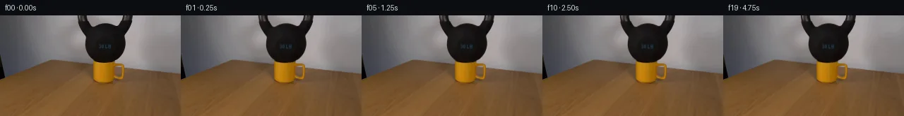
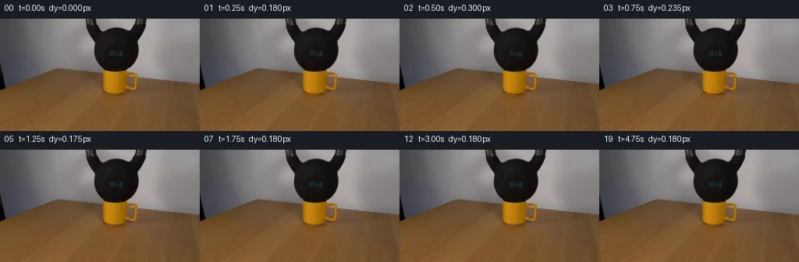
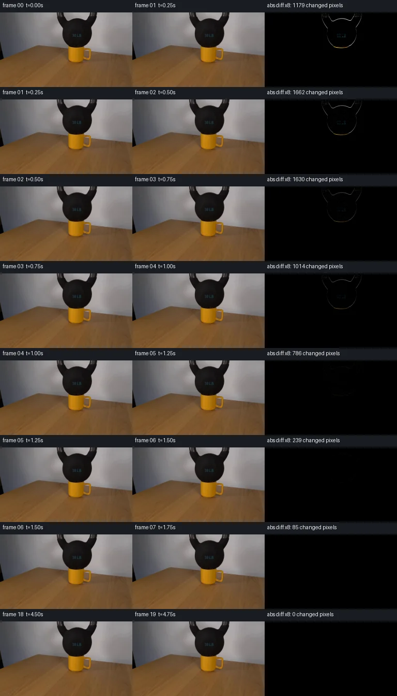

V0 · 初版 · 最终提交
![]()
Observable Generation Trace
把最终像素视频、Harness 冻结的每轮候选、真实工具事件和 Agent 自述放在同一页。可观测证据与模型自述分开标记，避免把“模型说它检查过”误当成真实工具调用。
![首帧]()
Static locked-off single-shot with fixed frame throughout filmed with constant framerate in real-time. The scene shows a realistic scientific demonstration. The scene only contains the described setup and actions. The yellow ceramic mug is on a wooden table. The 30lb kettlebell is placed on top of the yellow ceramic mug.
首帧显示在左侧播放器初始画面。Track 权限、隔离和 tensor 一致性来自 run manifest，而不是 METHOD.md。
默认勾选初版和最终版；可选其他版本一起同步播放。仅检查图更新的连续重复快照已合并，回退旧视频仍保留为一次修订。
Observable events
来源：events.jsonl + run manifest
此 Track 禁止读取输出图片。逐轮预览由外部 Harness 自动冻结，只用于事后审计，生成 Agent 当时看不到这些页面。
Frozen candidates
每张图来自该 round 的真实 00 / 01 / 05 / 10 / 19 帧

pixels 1cdad66566a761a7 · code 8a763e7dadebb5bf
--- previous/generate.py +++ current/generate.py @@ -0,0 +1,182 @@ +"""Local photographic pixel continuation, with no image-model or engine use.""" +from pathlib import Path +import json +import numpy as np +from PIL import Image, ImageDraw +from scipy.ndimage import map_coordinates +from artifact_io import save + +ROOT = Path(__file__).resolve().parent +SHIFTS = np.array([0, .180, .300, .235, .165, .175, .182] + [.180] * 13) + + +def intervals(xs): + if len(xs) == 0: + return [] + groups = np.split(xs, np.flatnonzero(np.diff(xs) > 1) + 1) + # Close short splits inside opaque handle highlights, preserving its hole. + result = [] + for group in groups: + a, b = int(group[0]), int(group[-1]) + if result and a - result[-1][1] <= 5: + result[-1][1] = b + else: + result.append([a, b]) + return result + + +def extract_layers(source): + """Infer an opaque metal interior and antialiased silhouette edge from RGB. + + The inferred clean plate is only used underneath the metal. Visible scene + pixels are preserved exactly wherever both initial and moved alpha are zero. + No separate clean-plate image or mask is used as an input. + """ + src = source.astype(np.float64) + background = src.copy() + alpha = np.zeros(src.shape[:2], dtype=np.float64) + xgrid = np.arange(256) + for y in range(68): + if y < 64: + dark = np.flatnonzero((src[y, :, 0] < 105) & + (xgrid >= 109) & (xgrid <= 188)) + runs = intervals(dark) + elif y == 64: + runs = [[133, 162]] + elif y == 65: + runs = [[134, 161]] + elif y == 66: + runs = [[137, 159]] + else: + runs = [[140, 156]] + for lo, hi in runs: + left, right = max(0, lo - 3), min(255, hi + 3) + ids = np.arange(lo - 2, hi + 3) + # Interpolate measured exposed background on both silhouette sides. + f = (ids - left) / (right - left) + bg = src[y, left][None] * (1 - f[:, None]) + src[y, right][None] * f[:, None] + if y >= 65: + # Lower edge covers the existing yellow rim. Use the intact + # adjacent front-rim row to estimate just the occluded surface. + bg = src[68, ids].copy() + background[y, ids] = bg + metal = np.array([24., 17., 14.]) if y < 64 else np.array([22., 12., 6.]) + span = bg - metal + a = np.sum((bg - src[y, ids]) * span, axis=1) / np.maximum(np.sum(span * span, axis=1), 1) + a = np.clip(a, 0, 1) + a[a < .025] = 0 + if y < 66: + # Bright streaks inside the cropped metal handle are texture, + # not holes. The short-run closure above keeps them opaque. + a[(ids > lo) & (ids < hi)] = 1 + a[(ids >= lo) & (ids <= hi) & (src[y, ids, 0] < 70)] = 1 + alpha[y, ids] = a + # Premultiplied color solves the source compositing equation exactly. + premult = src - background * (1 - alpha[..., None]) + premult[alpha == 0] = 0 + background[alpha == 0] = src[alpha == 0] + return background, alpha, premult + + +def render(source, background, alpha, premult, displacement): + if displacement == 0: + return source.copy() + yy, xx = np.mgrid[:144, :256].astype(np.float64) + coords = [yy - displacement, xx] + # Nearest boundary extension continues the already cropped handle above + # the frame. Bilinear subpixel sampling retains the photographic texture. … diff truncated; 95 more lines …
pixels 1cdad66566a761a7 · code 8bb89cf5b61e1991
--- previous/generate.py
+++ current/generate.py
@@ -1,6 +1,8 @@
"""Local photographic pixel continuation, with no image-model or engine use."""
from pathlib import Path
+import base64
import json
+import re
import numpy as np
from PIL import Image, ImageDraw
from scipy.ndimage import map_coordinates
@@ -148,12 +150,39 @@
assert xx.min() >= 106 and xx.max() <= 190 and yy.max() <= 68
# The visible mug wall, handle, table, and backdrop outside the bell stay fixed.
assert np.array_equal(frames[:, 69:], np.repeat(original[None, 69:], 20, axis=0))
+ # Independently reconstruct every embedded player delta without a browser
+ # or an image-view tool and compare it with the output tensor.
+ html = (ROOT / 'index.html').read_text()
+ data = json.loads(re.search(r"const DATA=(.*?);\nfunction unpack", html, re.S).group(1))
+ decode = lambda s: np.frombuffer(base64.b64decode(s), dtype='<u4')
+ player_frames = [decode(data['first']).copy()]
+ for encoded in data['deltas']:
+ packet = decode(encoded)
+ current = player_frames[-1].copy()
+ i = 0
+ while i < len(packet):
+ start, count = int(packet[i]), int(packet[i + 1])
+ i += 2
+ current[start:start + count] = packet[i:i + count]
+ i += count
+ assert i == len(packet)
+ player_frames.append(current)
+ assert len(player_frames) == 20
+ for n, packed in enumerate(player_frames):
+ assert np.array_equal(packed.reshape(144, 256), tensor[..., n])
+ assert '},250)' in html
+ for filename, size in [('inspection.png', (1024, 336)),
+ ('transition_check.png', (768, 1344))]:
+ with Image.open(ROOT / filename) as diagnostic:
+ assert diagnostic.mode == 'RGB' and diagnostic.size == size
+ diagnostic.verify()
report = {
'frame_count': 20, 'size': [256, 144], 'fps': 4,
'duration_seconds': 5, 'sampling': 'n/4, n=0..19; 0.25s display per frame',
'tensor_key': 'pixels', 'tensor_shape': list(tensor.shape),
'tensor_dtype': str(tensor.dtype), 'packing': '0xRRGGBB',
'frame_00_exact': True, 'all_pngs_match_tensor': True,
+ 'all_embedded_player_frames_match_tensor': True,
'stable_frames': [7, 19],
'max_downward_displacement_pixels': float(SHIFTS.max()),
'change_bbox_xyxy': [int(xx.min()), int(yy.min()), int(xx.max()), int(yy.max())],Final visual checks
Harness 保存的最终产物


Agent claims
以下文字由生成 Agent 撰写，不等同于工具证据
Only prompt.txt and numeric RGB inspection of first_frame.png were used to infer the scene. No image Read/View tool, reference image, model, engine, network resource, or subagent was used. Coordinates below are zero based and approximate where anti-aliasing makes an edge ambiguous.
Interpret the given first frame as the end of placement. A 30 lb mass corresponds to about 13.61 kg and a 133 N gravity load. That load, distributed across a ceramic rim and walls, does not by itself establish failure; the prompt does not specify an impact, a crack, or crushing. Keep the mug intact and portray a barely resolved, damped vertical settling of the rigid bell. This displacement represents seating at contact, not visible compression of the mug. Preserve background, table, mug, handle, lighting, and framing. Do not create an unsupported lift, drop, fracture, or new actor.
At this scale the amplitude is less than one pixel. The final bell displacement is 0.18 pixels downward. A decaying seating overshoot peaks at 0.30 pixels. There is no horizontal translation, rotation, camera motion, shape deformation, or sustained oscillation. After 1.75 seconds, the setup is fully still.
Frames are sampled at t=n/4 seconds and each is displayed for 0.25 seconds, making a five-second playback.
| Frame | Time (s) | Bell downshift (px) | Event |
|---|---|---|---|
| 00 | 0.00 | 0.000 | Exact source pixels; bell already touching the rim. |
| 01 | 0.25 | 0.180 | Very small seating response under the load. |
| 02 | 0.50 | 0.300 | Maximum subpixel seating overshoot. |
| 03 | 0.75 | 0.235 | Damped return toward equilibrium. |
| 04 | 1.00 | 0.165 | Tiny final rebound while maintaining contact. |
| 05 | 1.25 | 0.175 | Motion is nearly extinguished. |
| 06 | 1.50 | 0.182 | Final negligible correction. |
| 07 | 1.75 | 0.180 | Stable equilibrium. |
| 08 | 2.00 | 0.180 | Bell stays centered; mug intact. |
| 09 | 2.25 | 0.180 | Stable load demonstration. |
| 10 | 2.50 | 0.180 | Stable load demonstration. |
| 11 | 2.75 | 0.180 | Stable load demonstration. |
| 12 | 3.00 | 0.180 | Stable load demonstration. |
| 13 | 3.25 | 0.180 | Stable load demonstration. |
| 14 | 3.50 | 0.180 | Stable load demonstration. |
| 15 | 3.75 | 0.180 | Stable load demonstration. |
| 16 | 4.00 | 0.180 | Stable load demonstration. |
| 17 | 4.25 | 0.180 | Stable load demonstration. |
| 18 | 4.50 | 0.180 | Stable load demonstration. |
| 19 | 4.75 | 0.180 | Final held frame, displayed through 5.00 s. |
Use a locally inferred dark-metal matte restricted to the measured bell region, recover the nearby background at silhouette edges from scanline interpolation, and translate the premultiplied source color and matte by the prescribed fractions of a pixel. Retain original mug pixels except where the moving bell's contact edge overlaps them. Lock all other pixels. Verify frame 00 exactly, all image dimensions and modes, all twenty PNGs against the uint32 0xRRGGBB tensor, stable late frames, and bounds and magnitude of pixel differences. Create contact-sheet and transition-difference PNG artifacts without viewing them through image tools.
The result is a five-second, 20-frame RGB continuation at 256 by 144 pixels and four frames per second. Frame 00 is copied exactly from first_frame.png. The input already shows the black kettlebell seated on the yellow mug. The bell settles downward by at most 0.30 pixels during the first 1.5 seconds and reaches a stationary 0.18-pixel downward offset at 1.75 seconds. The mug remains intact and the camera stays locked.
generate.py uses Python, NumPy, Pillow, and SciPy's local numeric interpolation. It does not use an external rendering engine, generative image/video model, reference image, supplied mask, network service, or subagent. Input measurements were obtained from channel arrays, scanline RGB values, and character maps calculated from RGB/luminance. No image Read/View tool was used, including for the output artifacts. The diagnostic sheets have been generated and checked numerically; no visual-review claim is made.
The scene interpretation and twenty-frame displacement plan were written to OBSERVATION.md before writing the generation code. The 30 lb designation comes from the text; it cannot be independently determined from the image pixels. The contact state comes from the transition between the black lower silhouette at y=67 and the yellow rim at y=68.
The generator infers a small local metal matte from dark scanline intervals inside the measured kettlebell bounds. Short gaps between specular pixels within the handle are closed while preserving the large handle opening. The interiors are opaque; silhouette border opacity is estimated from source RGB contrast against an interpolated background and representative dark-metal color. Under the bell's bottom edge, the adjacent visible yellow rim provides the estimate of the occluded mug surface. The source compositing equation is used to obtain premultiplied foreground colors. These colors and the matte are translated vertically using bilinear interpolation at each prescribed displacement, then composed over the local estimated clean plate. The upper image boundary uses nearest-edge extension for the cropped handle. RGB results are rounded to uint8. All pixels outside both the original and displaced metal matte are restored to their exact input values.
This is a source-texture warp with a prescribed, damped settling trajectory. It is not a calibrated material simulation or a solved collision/fracture model. The tiny motion is an assumption about the last stage of placement. There is no sideways motion, camera movement, synthetic lighting change, added actor, crack, ceramic deformation, or debris. The existing mug body and handle, the table, background, and shadows below y=68 remain exact source pixels in all frames.
A 30 lb kettlebell has approximately 13.61 kg mass and a static gravitational load of approximately 133 N. Without an impact velocity, flaw, contact geometry, or failure instruction, that load alone is insufficient evidence that this ceramic mug should fracture. The continuation therefore treats the already centered bell as supported by the ceramic rim and walls. Subpixel seating maintains visible contact. The chosen trajectory is intentionally small because the initial frame is already at contact and no incoming hand or other actor is present.
frames/00.png through frames/19.png: the twenty RGB samples at t=0.00, 0.25, ..., 4.75 seconds. Each displays for 0.25 seconds.pixels.npz: key pixels, shape (144, 256, 20), dtype uint32. Each entry is packed as 0xRRGGBB.index.html: a standalone canvas player with embedded first-frame and delta data, play/pause, replay, seek, and looping. Its playback interval is 250 milliseconds; no external asset is required.inspection.png: eight annotated full-frame samples with actual sample times and displacement values.transition_check.png: the seven settling transitions and a final static pair, each with an eightfold-amplified absolute RGB difference panel. The amplified panels are diagnostic only.verification.json: machine-readable integrity results and numeric change statistics.OBSERVATION.md, generate.py, and this file document and reproduce the work.The output helper artifact_io.py handles PNG, packed-tensor, and player serialization; it does not synthesize the scene. The generator replaces the helper's contact sheet with one that labels sample times explicitly and adds the required transition sheet.
Validation checks exact frame-00 equality, the mode and dimensions of every PNG, every packed tensor value against its decoded PNG, and all twenty independently reconstructed embedded player frames against the tensor. It also checks static frames 07–19, the unchanged scene below the contact zone, and valid diagnostic PNGs. Pixel differences are confined to x=109–188, y=1–68; maximum per-channel source difference is 47 at an antialiased edge during the 0.30-pixel peak displacement. At the final position the mean absolute channel difference over the entire image is about 0.102 on the 0–255 scale. No image-tool visual inspection or browser rendering check was performed.
Reproduce all generated output and validation with:
python generate.py